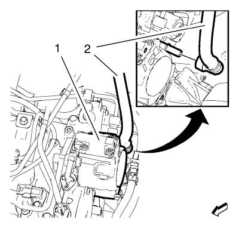
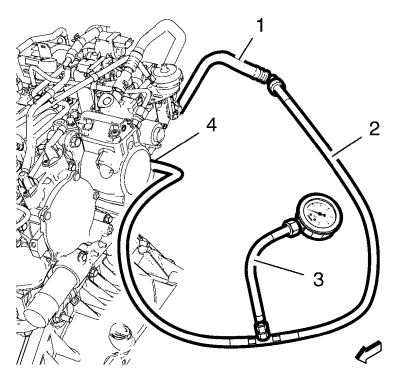

Montaje y Desmontaje del Manómetro de Combustible
Herramientas especiales
| • | EN-50457 Comprobador de la presión de combustible |
| • | EN-50571 Adaptador del manómetro de combustible |
Si desea informarse sobre herramientas regionales equivalentes, consultar Herramientas especiales .
Procedimiento de desmontaje
Advertencia: Consulte Advertencia sobre liberar presión de combustible en la sección Prólogo.
Advertencia: Consulte Advertencia sobre la gasolina y sus vapores en la sección Prólogo.
Advertencia: Consulte Gafas de seguridad y advertencia de combustible en la sección Prólogo.

Desacople el tubo de alimentación de combustible (2) de la bomba de inyección de combustible (1) y suéltelo del clip de retención. Consultar Servicio del adaptador de conexión rápida del collarín plástico .
Procedimiento de montaje

- Emborne el adaptador del comprobador de la presión de combustible EN-50571 (2) al puerto de la tubería de alimentación de combustible en la posición (4) y al tubo de alimentación de combustible (1).
- Emborne el comprobador de la presión de combustible EN-50457 (3) al adaptador del comprobador de la presión de combustible EN-50571 (2).
- Compruebe si hay fugas de combustible.
- Retire el comprobador de la presión de combustible EN-50457 (3) del adaptador del comprobador de la presión de combustible EN-50571 (2).
- Retire el adaptador del comprobador de la presión de combustible EN-50571 (2) del puerto de la tubería de alimentación de combustible (4) y del tubo de alimentación de combustible (1).
- Acople el tubo de alimentación de combustible (2) a la bomba de inyección de combustible (1) y fíjelo al clip de retención.
- Cebe el sistema de combustible. Consultar Cebado del sistema de combustible .
| © Copyright Chevrolet. All rights reserved |